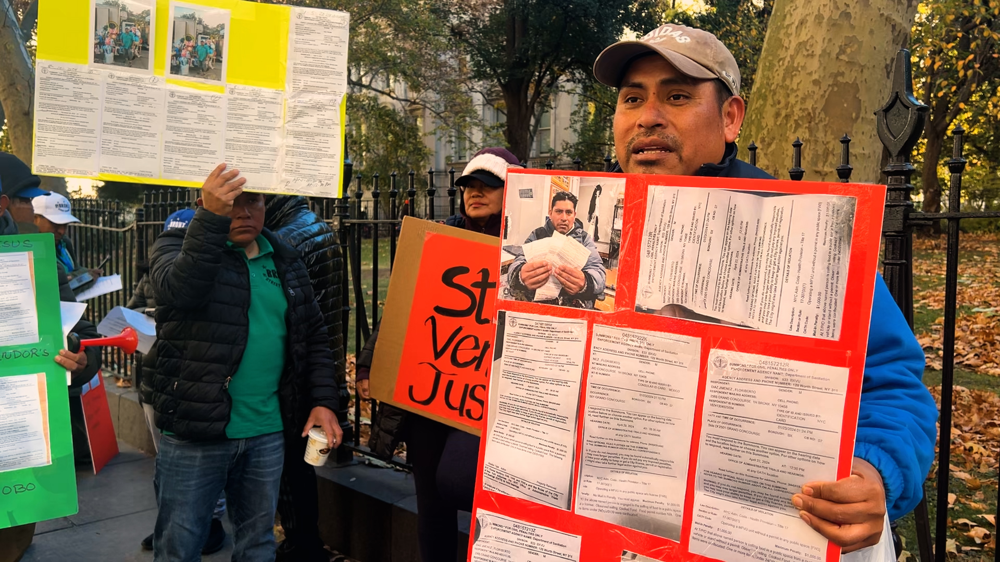

Fines and court summons against street vendors in New York City have been concentrated in four areas of Queens since Mayor Eric Adams' administration began in January 2022 through October 2024. A database analysis by OATHs' (Office of Administrative Trials and Hearings) public database reveals that Elmhurst, Jackson Heights, Jamaica, and Corona are the areas where this population has been penalized the most.
Floriberto Díaz, a street vendor from Queens, said that this job allows him to pay for the food and education of his two children. He explained that in a single day, he was given 6 fines, each for $1,000, while he was working on Roosevelt Avenue.
"We don't feel comfortable like before and we only want a permit that allows us to work, work freely, without fear towards the Department of Sanitation or the Police. Every day they take us off the streets. We have no way to survive, I don't even have enough money to pay for the tickets. $6,000 is a lot of money."
According to the map containing the analyzed data, the area with the most fines and court summonses (853) is Elmhurst, Queens. This area is home to Roosevelt Avenue, known for hosting dozens of street vendors.